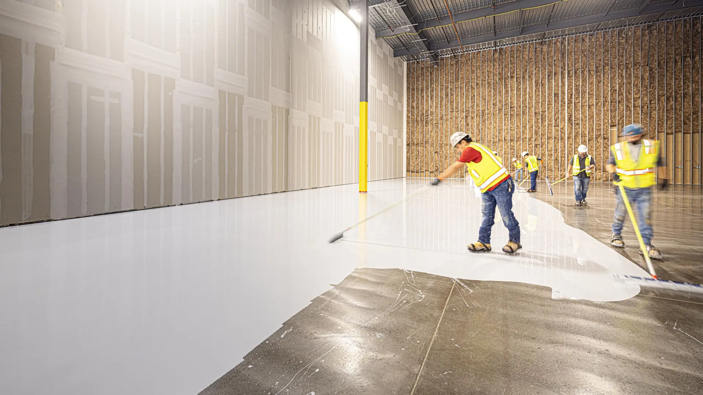
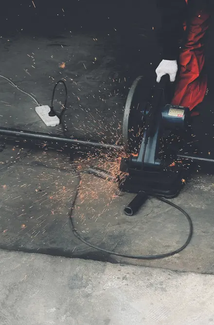
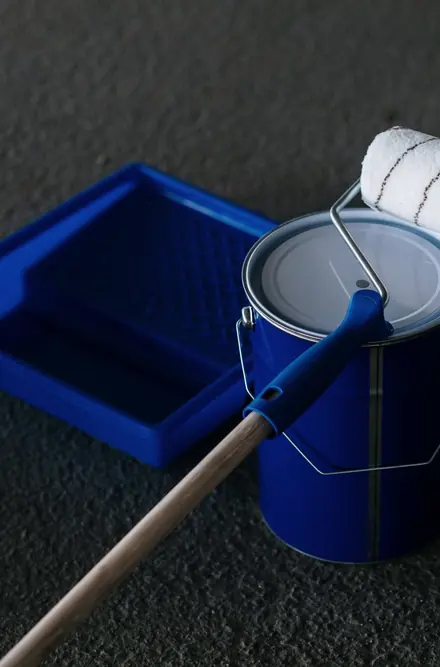
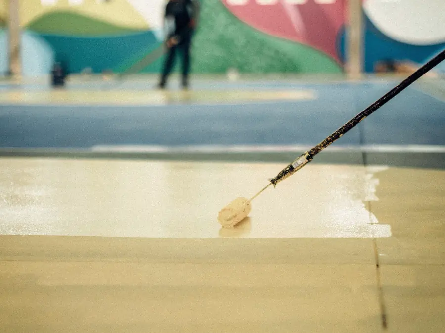
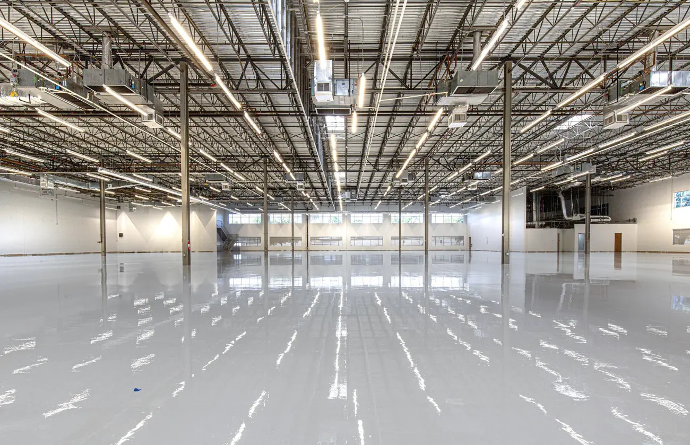
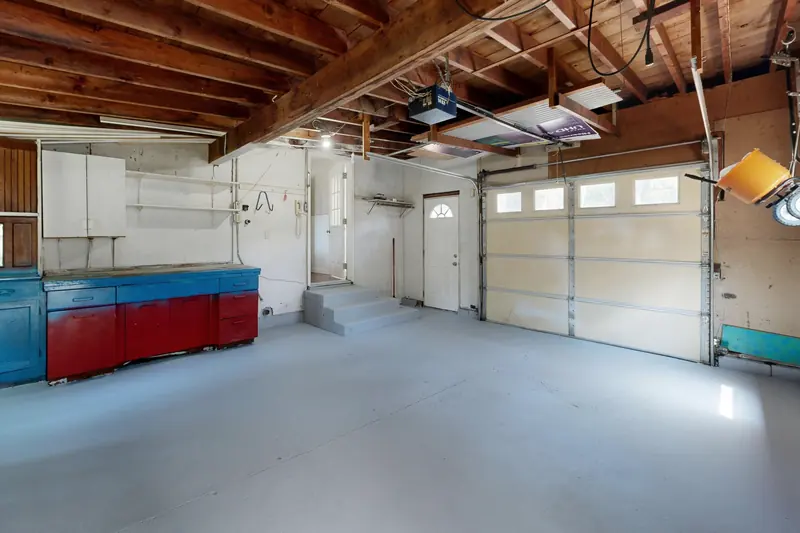
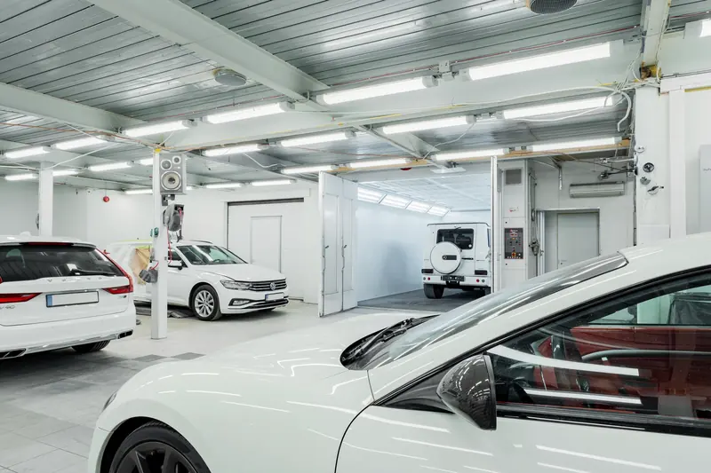
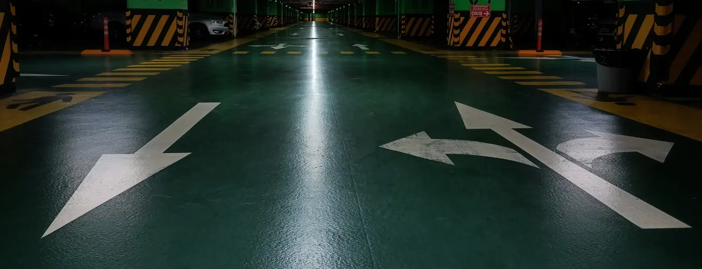
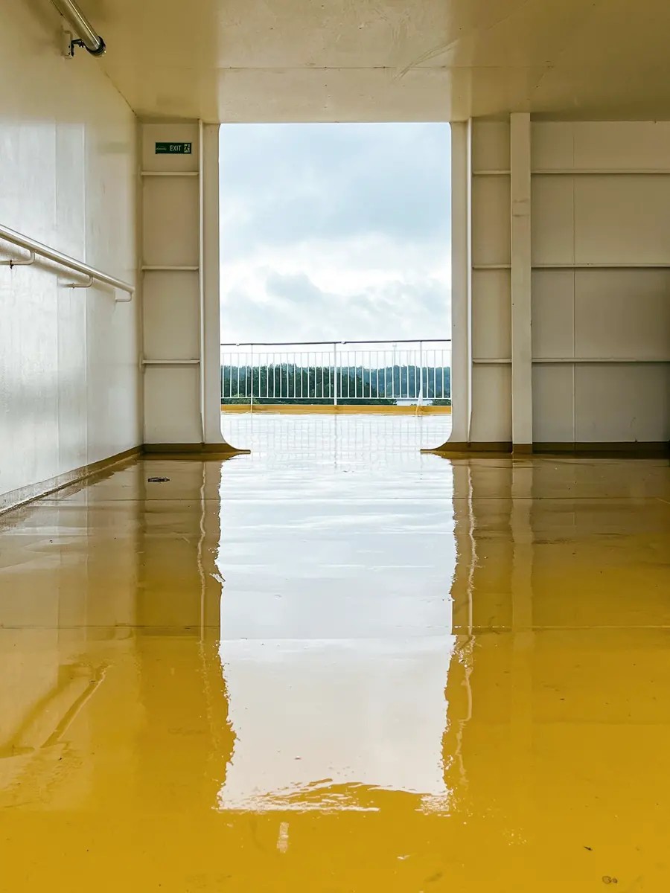
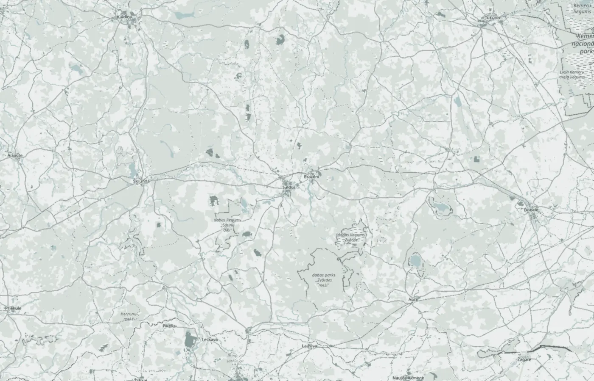

Epoksīda grīdas
Lietās epoksīda grīdas noliktavām, ražošanas telpām, garāžām un darbnīcām. Gluds segums bez šuvēm, ko viegli mazgāt un kas nekrāj putekļus.

Lietās grīdas · Saldus
SIA „EpoLatvija” ieklāj epoksīda un poliuretāna grīdas noliktavām, darbnīcām, garāžām un mājām. Sagatavojam pamatni, ieklājam segumu un nododam gatavu, viegli kopjamu grīdu.
Pakalpojumi
Grīda kalpo tik ilgi, cik labi sagatavota pamatne zem tās. Tāpēc darām visu ciklu: pamatni, segumu un marķējumu.
Lietās epoksīda grīdas noliktavām, ražošanas telpām, garāžām un darbnīcām. Gluds segums bez šuvēm, ko viegli mazgāt un kas nekrāj putekļus.
Elastīgāks segums vietām, kur grīda strādā ar temperatūras maiņu un vibrāciju vai kur vajadzīga klusāka, siltāka virsma.
Betona slīpēšana, vecā seguma noņemšana, plaisu un bedru remonts, putekļu nosūkšana un gruntēšana. No tā atkarīgs, cik ilgi segums turēsies.

Gājēju celiņi, braukšanas joslas, stāvvietas un bīstamās zonas uz grīdas. Līnijas veidojam ar krāsu, kas piemērota grīdas segumam.
Mazgājami pārklājumi sienām telpās, kur tām jābūt tīrām: ražošanā, noliktavās, mazgātavās un tehniskajās telpās.

Būvkomersantu reģistrā mūsu joma ir ēku būvdarbu vadīšana un būvuzraudzība. Grīdu darbus varam saskaņot ar pārējiem darbiem objektā.

Grīdas uzbūve
No augšas redzama tikai virskārta. Cik ilgi tā kalpos, izšķiras zemāk: pamatnē, slīpēšanā un gruntī.
Lietās grīdas griezums
Laka vai krāsas slānis. Tonis pēc RAL kartes, virsma matēta vai spīdīga, gluda vai ar pretslīdes piedevu.
Pašizlīdzinošs epoksīda vai poliuretāna slānis. Biezumu izvēlas pēc slodzes: kājāmgājēji, ratiņi vai tehnika.
Iesūcas betonā, piesaista atlikušos putekļus un sasaista segumu ar pamatni.
Noslīpējam cementa pieniņu, veco krāsu un netīrumus, aizpildām plaisas un bedres, lai segums turētos.
Pirms darbiem pārbaudām betona mitrumu, stiprību un līdzenumu. Mitrs vai irstošs betons ir biežākais iemesls, kāpēc segums atslāņojas.
Kur der
Lietā grīda ir bez šuvēm, tāpēc tajā neiekrīt netīrumi un ūdens. To izvēlas vietās, kur grīdu noslogo un bieži mazgā.

Gluda, izturīga grīda, pa kuru brauc iekrāvēji un ratiņi un kuru viegli uzkopt.

Eļļa, sāls un smiltis no riepām neiesūcas segumā. Grīdu var vienkārši nomazgāt.

Segums, kas iztur ūdeni, ķīmiju un ikdienas mazgāšanu.

Segums kopā ar marķējumu: braukšanas joslas, bultas un vietu numuri.
Pagrabi, garāžas, katlu telpas un veļas telpas: vietas, kur grīdai jābūt tīrai un sausai.
Pastāstiet par savu telpuKā strādājam
Uzrakstiet, kāda ir telpa, aptuvenā platība un kam to izmanto. Pievienojiet dažas fotogrāfijas no esošās grīdas.
Apskatām pamatni uz vietas: betona stāvokli, mitrumu, plaisas un līdzenumu.
Iesakām seguma sistēmu un toni, vienojamies par cenu un termiņu. Visu ierakstām līgumā.
Sagatavojam pamatni, ieklājam slāņus un nododam grīdu. Pastāstām, kad pa to var staigāt, kad braukt un kā to kopt.

Kontakti
Uzrakstiet, kāda ir telpa, cik liela tā ir un kam to izmanto. Atbildēsim ar jautājumiem vai piedāvājumu.
E-pastsepolatvija@gmail.com Tālrunis29 462 855AdreseJ. Rozentāla iela 20-29, Saldus, LV-3801
